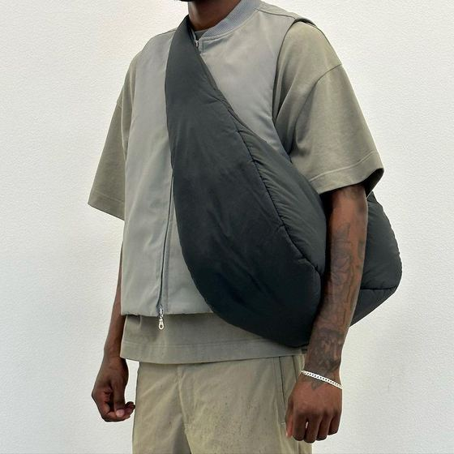

Criar uma marca de bolsas nunca foi tão acessível — e nunca teve tanta concorrência. A boa notícia: você não precisa de fábrica, máquinas nem anos de experiência em confecção para começar. Precisa de um bom posicionamento, um produto bem desenvolvido, um fabricante parceiro confiável e um plano de lançamento. Este é o guia mais completo que você vai encontrar sobre o assunto: o passo a passo real que as marcas que produzem com a gente seguem, do primeiro rascunho à primeira venda (e à recompra).
1. Entenda o mercado e escolha o seu nicho
Bolsa é um mercado enorme: streetwear, fitness, executivo, casual, infantil, sustentável, viagem. Marcas que tentam falar com todo mundo não falam com ninguém — e brigam por preço com gigantes. O primeiro passo, antes de escolher modelo ou tecido, é decidir para quem você vai produzir.
As três perguntas que definem a sua marca
- Quem compra? Idade, estilo de vida, onde essa pessoa já compra hoje;
- Por quê? Qual desejo ou problema o seu produto resolve — status, função, identidade, sustentabilidade;
- Por quanto? Quanto esse público paga por uma bolsa parecida. É isso que define seu preço e, junto com o custo, sua margem.
Todo o resto — modelo, material, cores, canais de venda, tom de comunicação — deriva dessas respostas. Uma marca de pochetes streetwear e uma marca de bolsas executivas vendem "bolsa", mas são negócios completamente diferentes.
Nichos que mais crescem no Brasil
- Streetwear / autoral: pochetes, shoulder bags e crossbody com identidade forte. Recompra alta;
- Sustentável: ecobags e produtos com material reciclado — apelo em alta e ótima margem quando bem posicionado;
- Fitness: gym bags e bolsas de treino, público fiel e recorrente;
- Corporativo / brinde: volume alto e previsível, ideal para quem quer escala. Veja a linha de brindes corporativos.
2. Construa a identidade da marca
Antes de existir produto, a marca precisa existir. Isso não significa gastar fortuna com agência — significa definir os elementos que fazem o cliente lembrar de você:
- Nome curto, fácil de falar e com domínio/@ disponível;
- Logo simples, que funcione pequeno (na etiqueta) e em uma cor só;
- Paleta e estética consistentes — as mesmas cores e o mesmo estilo de foto em tudo;
- Uma frase de posicionamento que resume por que você existe.
Consistência vale mais que perfeição. Uma marca nova com identidade coerente parece maior e mais confiável do que realmente é — e isso ajuda a vender e a cobrar mais caro.
3. Desenvolva o produto com quem entende de produção
Aqui é onde a maioria trava por achar que precisa de um desenho técnico profissional. Não precisa. Referências visuais (fotos de produtos parecidos, prints, um croqui simples) mais o apoio de um fabricante experiente resolvem. Nesta etapa se define:
Modelo e modelagem
Escolha o modelo a partir do uso real do produto e do seu nicho. Um bom fabricante ajuda a ajustar medidas, proporções e detalhes para o produto ficar funcional, bonito e produzível a um custo que fecha a sua margem.
Tecido e aviamentos
O material define aparência, toque, durabilidade e boa parte do custo. Nylon 600D para o dia a dia, lona de algodão para visual autoral, cordura para linhas técnicas. Os aviamentos (zíper, alça, fivela, forro, entretela) somam de 30% a 50% sobre o custo do tecido e fazem enorme diferença na percepção de qualidade. Entenda cada opção no guia de tipos de tecido para mochilas e bolsas.
Aplicação da marca
Bordado transmite valor premium; silk resolve logos coloridos em volume; sublimação permite estampa total; etiqueta e hot stamp dão acabamento sofisticado. A técnica muda o custo e o resultado — compare em bordado, silk ou sublimação.
A peça piloto: o seu seguro
Antes de produzir o lote, produza uma peça piloto — uma amostra física do produto com a sua marca aplicada. É ela que valida modelagem, tecido, acabamento e caimento antes de você investir no lote inteiro. Aprovar o piloto com a peça na mão elimina o maior medo de quem começa: "e se vier ruim?".
4. Entenda os custos e precifique com margem de verdade
Precificar errado quebra marca nova — seja cobrando de menos (não sobra lucro) ou de mais (não vende). A base é conhecer o custo real por peça, que não é só o valor da fábrica: inclua embalagem, frete rateado, impostos, taxa de marketplace/maquininha e o custo do tráfego pago.
Markup e margem
No varejo de acessórios, o preço de venda costuma ficar entre 2,5x e 4x o custo de produção, conforme o posicionamento. Markup é o multiplicador (custo × 3); margem é o percentual do preço que vira lucro. Não precisa fazer conta na mão: use a nossa calculadora de preço e margem gratuita — você coloca custo, preço e quantidade e vê na hora a margem, o markup e o lucro do lote.
Exemplo de precificação
| Custo por peça | Preço de venda | Markup | Margem |
|---|---|---|---|
| R$ 40 | R$ 100 | 2,5x | 60% |
| R$ 40 | R$ 140 | 3,5x | 71% |
| R$ 40 | R$ 160 | 4,0x | 75% |
Quanto mais forte a marca e o acabamento, maior o preço que o mercado aceita. Investir em identidade e em uma peça bem-feita é o que te tira da guerra de preço.
5. Comece com lote pequeno (e valide de verdade)
O erro mais caro de quem começa é produzir demais na primeira leva, apostando alto em algo ainda não testado. Um lote inicial de 20 a 50 peças (o mínimo na LS Confecções é 20 unidades por modelo) permite validar preço, canal de venda e aceitação com investimento controlado. Vendeu bem? O segundo lote sai mais barato por unidade — porque o custo de preparação se dilui em mais peças — e entra com ajustes baseados em feedback real. Comece pequeno, prove a demanda, depois escale. Entenda esse modelo em como funciona o private label.
6. Formalize a marca e o negócio
Você pode começar a vender como pessoa física ou MEI, mas alguns passos protegem a marca conforme ela cresce:
- CNPJ (MEI ou ME): permite emitir nota, comprar melhor e vender para empresas;
- Registro da marca no INPI: garante que ninguém use o seu nome. Não é obrigatório para começar, mas evita dor de cabeça se a marca crescer;
- Domínio e perfis sociais no mesmo nome, registrados cedo.
Não trave o lançamento esperando formalizar tudo — mas tenha esse checklist no radar para não ser pego de surpresa.
7. Monte seus canais de venda
Você não precisa de todos de uma vez. Comece pelo que converte mais rápido e vá somando:
- Instagram + WhatsApp: o combo de entrada. Vitrine no perfil, venda fechada no direct/WhatsApp;
- Loja própria: um site ou uma loja em plataforma dá credibilidade e controle;
- Marketplaces: alcance rápido, mas com taxa — bom para volume, ruim para construir marca;
- Pontos físicos e multimarcas: conforme a demanda cresce.
8. Lance com prova social, não com anúncio frio
Antes de anunciar, produza conteúdo com o produto real: fotos de uso, vídeos mostrando a costura e o acabamento de perto, bastidores da produção. Esse material vale mais que qualquer texto de venda — mostra que o produto existe e é bom.
Aqueça antes de vender
No lançamento, uma lista de espera no WhatsApp ou uma contagem regressiva no Instagram convertem muito mais do que um anúncio frio para quem nunca ouviu falar da marca. Faça as pessoas quererem o produto antes de ele estar disponível.
Orgânico e pago se completam
O conteúdo orgânico constrói marca e confiança no longo prazo; o tráfego pago traz volume e velocidade. Comece com um orçamento pequeno de anúncio, meça o custo por conversa/venda e só escale o que provar retorno. Não terceirize o entendimento dos números — eles decidem se você cresce com lucro.
9. Escale com base em dados
Depois das primeiras vendas, o jogo vira gestão. Acompanhe quais modelos e cores mais saem, qual canal traz o cliente que mais compra e qual a sua taxa de recompra. A venda mais barata é sempre a segunda: um cliente satisfeito volta e indica. Programe reposições antes de o estoque zerar e trate cada cliente como base para a próxima coleção.
Quanto custa começar uma marca de bolsas?
Somando desenvolvimento, peça piloto e um lote inicial de 20 a 30 peças, muitas marcas começam com um investimento de produto na casa de poucos milhares de reais — bem abaixo do que a maioria imagina. Some a isso um pequeno orçamento de conteúdo/anúncio e você tem um lançamento real. O detalhamento completo está no artigo quanto custa fabricar uma bolsa personalizada.
Os 5 erros que mais matam marcas novas
- Produzir demais na estreia — trava o caixa em estoque não validado;
- Precificar sem incluir todos os custos — a margem some nas taxas e no frete;
- Falar com todo mundo — sem nicho, a marca não gruda em ninguém;
- Pular a peça piloto — produzir lote sem aprovar a amostra é apostar às cegas;
- Depender de um canal só — se o alcance despenca, a venda para junto.
Perguntas frequentes
Preciso de CNPJ para começar uma marca de bolsas?
Não para os primeiros testes — você pode validar como pessoa física ou MEI. Mas ter CNPJ (MEI ou ME) desde cedo facilita comprar melhor, emitir nota e vender para empresas.
Qual a quantidade mínima para fabricar?
Na LS Confecções, a partir de 20 peças por modelo — um volume pensado para marcas em início: grande o bastante para testar a venda e pequeno o bastante para não travar o caixa.
Preciso saber costurar ou ter fábrica?
Não. No modelo de private label, você cuida da marca e da venda, e a fábrica cuida da modelagem, dos materiais e da produção.
Quanto tempo leva para produzir o primeiro lote?
Depois de aprovar a peça piloto, a produção leva em média até 25 dias úteis, variando conforme a complexidade e a quantidade.
Criar uma marca de bolsas é menos sobre ter uma fábrica e mais sobre unir posicionamento, produto bem-feito e execução. Se você quer que a produção deixe de ser o gargalo, conheça nosso modelo de private label — você cria a marca, a gente fabrica.
Pronto para produzir com a LS Confecções?
Fabricação B2B de bolsas, mochilas e acessórios personalizados a partir de 20 unidades, em São Paulo. Fale direto com nosso comercial e receba uma proposta em minutos.
Solicitar orçamento